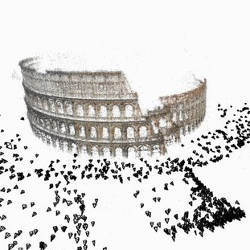

class: center, middle # Géométrie, caméras et reconstruction 3D Paul Gay --- # Pour aujourd'hui... .center[ <br/><br/>] La géométrie en vision par ordinateur: - Profondeur, volume, point de vue, orientation, mouvement... --- # Pourquoi nous voudrions apprendre la géométrie .center[ <br/><br/>] Avec la nouvelle génération de smartphones! --- # Même à l'heure du Deep learning La mode du Deep Learning a diminué son intérêt mais: - La géométrie fournit une théorie solide pour décrire la forme et la structure du monde. - A priori intéressant pour l'apprentissage. - La géométrie est incluse dans nos données contrairement à des labels sémantiques.<br> $\Rightarrow$ Utile pour l'apprentissage non-supervisé. <a href="https://alexgkendall.com/computer_vision/have_we_forgotten_about_geometry_in_computer_vision/">Have we forgotten about geometry in computer vision?</a> <br> Article du blog d'Alex Kendall --- # Transformation basiques .center[ <br/><br/>] Modifier une image avec une transformation sur les pixels $$\begin{pmatrix}x' \\\ y' \end{pmatrix} = A \begin{pmatrix}x & y \end{pmatrix}^T + B,$$ où $A\in \Re^{2,2}$ et $B\in\Re^{2,1}$ --- .center[ <br/><br/>] Exercice : comment retrouver la transformation qui effectue une rotation en conservant le centre? Donnez les matrices A et B en fonction de la matrice de rotation R et du centre de l'image $C$. Conseil : Vous pouvez utiliser le code donné dans le premier cours. --- # Transformations basiques .center[ <br/><br/>] --- # Illustrations avec des images Quelles propriétés sont perdues par ces transformations? .center[ <br/><br/>] --- # Généralisation vers la 3D Par exemple avec la rotation: <span style="font-size:0.7em;"> $$ \begin{split} R &= R_x(\theta)R_z(\theta)R_y(\theta) \\\ &=\begin{pmatrix} 1 & 0 & 0 \\\ 0 & cos\theta & -sin\theta \\\ 0 & sin\theta & cos\theta \\\ \end{pmatrix} \begin{pmatrix} cos\theta & 0 & sin\theta \\\ 0 & 1 & 0 \\\ -sin\theta & 0 & cos\theta \\\ \end{pmatrix} \begin{pmatrix} cos\theta & -sin\theta& 0 \\\ sin\theta & cos\theta& 0 \\\ 0 & 0 & 1 \\\ \end{pmatrix}\\\ \end{split} $$ </span> - $R$ est une matrice de rotation 3x3 produit de 3 autres matrices correspondant à des rotations sur chaque axe. --- # Estimer une transformation Comment retrouver les paramètres $A$ et $B$ de la transformation affine étant données les images suivantes? .center[ <br/><br/>] $$\begin{pmatrix}x' \\\ y' \end{pmatrix} = A \begin{pmatrix}x & y \end{pmatrix}^T + B,$$ avec $ A=\begin{pmatrix} a_1 & a_2 \\\ a_3 & a_4 \\\ \end{pmatrix}$ et $B = \begin{pmatrix}b_1 \\\ b_2 \end{pmatrix} $ --- # Étape 1: Correspondances .center[ <br/><br/>] Extraire une collection de couples de points $(x_i',y_i'), (x_i,y_i)$ avec pour chacun d'eux: $$\begin{pmatrix}x_i' \\\ y_i' \end{pmatrix} = A \begin{pmatrix}x_i \\\ y_i \end{pmatrix} + B,$$ --- # Étape 2: Construction d'un système d'équations Notre problème peut s'écrire sous la forme $Uv = p$: $$ \begin{pmatrix} x_1 & y_1 & 1 & 0 & 0 & 0 \\\ 0 & 0 & 0 & x_1 & y_1 & 1 \\\ x_2 & y_2 & 1 & 0 & 0 & 0 \\\ 0 & 0 & 0 & x_2 & y_2 & 1 \\\ & & \dots & & & \end{pmatrix} \begin{pmatrix} a_1 \\\ a_2 \\\ b_1 \\\ a_3 \\\ a_4 \\\ b_2 \\\ \end{pmatrix} = \begin{pmatrix} x_1' \\\ y_1' \\\ x_2' \\\ y_2' \\\ \vdots \\\ \end{pmatrix} $$ C'est un système d'équations linéaires que l'on peut résoudre --- # Étape 3: résoudre le système - Avec la pseudo-inverse: <span style="font-size:0.7em;"> $$ \begin{split} Uv & = b \\\ (U^TU)^{-1}U^TU v &= (U^TU)^{-1}U^T p \\\ v &= (U^TU)^{-1}U^T p \\\ \end{split} $$ </span> - Ou en python: ``` v = np.linalg.lstsq(U, p)[0] ``` La solution $\hat{v} = (U^TU)^{-1}U^T p $ est optimale au sens des moindres carrés: <span style="font-size:0.7em;"> $$\hat{v} = argmin\_{A, B} \sum_i || A\begin{pmatrix} x_i \\\ y_i\end{pmatrix} + B - \begin{pmatrix} x_i' \\\ y_i'\end{pmatrix} ||^2$$ </span> --- # Algèbre linéaire Combien de correspondances faut-il pour chaque transformation? La théorie dit qu'il faut au moins une équation par inconnue (ou degré de liberté) -- .center[ <br/><br/>] --- # Quelques considérations: En théorie, Il suffit d'une équation par inconnnue. - Dans la vraie vie, il en faut plus à cause des mesures bruitées .center[ <br/><br/>] - Nombreux travaux sur la détections de points de correspondances potentiels: Sift, ORB, LBP... - Surtout basés sur des histogrammes de gradients calculés autour de points d'intérêts. --- # Estimation Robuste La fonction des moindres carrées, et donc la solution de la pseudo-inverse est très sensible aux valeurs abberantes!! .center[] <br/><br/> - Séléction de points, détection de valeurs aberrantes: RANSAC - Fonction de coût robuste. --- # Transformation projective .center[ <br/><br/>] - Par rapport au cas affine, on perd la conservation du parallélisme - Mais une droite reste une droite, un plan aussi $$ \rho\begin{pmatrix} x' \\\ y' \\\ 1 \\\ \end{pmatrix} = \begin{pmatrix} a & b & c \\\ d & e & f \\\ g & h & i \\\ \end{pmatrix} \begin{pmatrix} x \\\ y \\\ 1 \\\ \end{pmatrix} $$ - Existence d'un facteur $\rho$, pas de système direct $Uv =b$ --- # Coordonnées homogènes En géométrie projective, les éléments ont une ambiguité sur l'echelle: Les points suivants correspondent tous au pixel $(x, y)$ $$ \begin{pmatrix} k_1 x \\\ k_1 y \\\ k_1 \end{pmatrix} = \begin{pmatrix} k_2 x \\\ k_2 y \\\ k_2 \end{pmatrix} = \begin{pmatrix} x \\\ y \\\ 1 \end{pmatrix} $$ --- # Les longueurs (et l'aire) ne sont pas conservées .center[ <br/><br/>] Source James Hays or this one: david_forsyth_length_lost --- # On perd la valeur des angles .center[ <br/><br/>] --- background-image: url(images/cours_ti2/illusion.png) --- background-image: url(images/cours_ti2/illusion_solution.png) --- class: middle, center ## Lab : Transformations géométriques #### Ouvrir le fichier: <font color="blue">TP_transformation_affine.ipynb_</font> --- # Les modèles de caméra Objectif: trouver une transformation qui, étant donné un point en 3D, nous donne sa position en pixels sur l'image On se doute qu'il faut connaitre plusieurs choses: ** Paramètres extrinsèques: ** - Position de la caméra: translation - Pose de la caméra: orientation ** Paramètres intrinsèques: ** - Paramètres internes de la caméra, focale, résolution... --- # Le modèle sténopé .center[ <br/><br/>] Si nous plaçons un capteur devant un objet. Quelle image obtient-on? --- # Le modèle sténopé .center[ <br/><br/>] - Placer une barrière avec un trou. - Chaque partie du capteur ne reçoit de la lumière que d'une seule direction - Inconvénient: très peu de lumière arrive sur le capteur. --- # Le modèle sténopé .center[ <br/><br/>] - Solution: augmenter la quantité de lumière avec une lentille. - Inconvénient: la profondeur de champ est limité. --- # La caméra est une chambre Caméra vient de l'italien: camera (chambre) Connue d'Aristote .center[ <br/><br/>] --- # Le modèle sténopé .center[ <br/><br/>] Dans notre cadre, on suppose que la caméra peut être approximée par un modèle sténopé. Ok, c'est parti. --- # Matrice de caméra perspective .center[<img src="images/cours_ti2/pinehole_shema.png" style="width: 400px;" /> <br/><br/>] - On veut faire correspondre les coordonnées (x, y) avec (u, v, w) - D'aprés Thalès, on a: $$ x = \frac{u}{w} \times f, x = \frac{v}{w} \times f $$ --- # Homogéiniser les dimensions - Coordonnées v, w, et f ne sont pas exprimées en pixels (e.g. en mètres). - Ajout d'un coefficient $\phi = \lambda \times f$: $$y = \frac{v}{w} \times \phi = \frac{v}{w} \times \phi $$ $\lambda$ représente la taille physique d'un pixel i.e. du capteur. - Le capteur n'est pas carré: différentes valeurs pour $x$ et $y$ $$x = \frac{u}{w} \times f \times \lambda_x = \frac{u}{w} \times \phi_x $$ $$y = \frac{v}{w} \times f \times \lambda_y = \frac{v}{w} \times \phi_y $$ --- # Coordonnées dans l'image - Le système de coordonnées de l'image: (0,0) n'est pas au centre Par exemple, en haut à gauche pour les tableau numpy - Ajout d'un terme compensatoire: $$x = \frac{u}{w} \times \phi_x + \sigma_x $$ $$y = \frac{v}{w} \times \phi_y + \sigma_y $$ $(\sigma_x, \sigma_y)$ peut être interprété comme la position du centre de l'image. --- # Écriture matricielle: Nous avons obtenu: $$\begin{pmatrix}x \\\ y \end{pmatrix}=\begin{pmatrix} \frac{u}{w} \times \phi_x + \sigma_x \\\ \frac{v}{w} \times \phi_y + \sigma_y \end{pmatrix}$$ - Utilisation de coordonnées homogènes: $$w\begin{pmatrix}x \\\ y \\\ 1\end{pmatrix}= \begin{pmatrix} \phi_x & 0 &\sigma_x \\\ 0 &\phi_y &\sigma_y \\\ 0 & 0 & 1 \end{pmatrix} \begin{pmatrix} u \\\ v \\\ w \end{pmatrix} $$ - ** $\phi_x, \phi_y, \sigma_x, \sigma_y$ sont les paramètres intrinsèques de la caméra.** --- # Position et orientation de la caméra .center[ <br/><br/>] Coordonnées $(u,v,w)$ exprimées dans le repère $\mathcal{C}= (O,i,j,k)$: - $O$ est le centre optique, c.a.d. la position de la caméra, - $i$ est la direction de l'axe optique, - $j$ et $k$ correspondent aux axes $y$ et $x$ de l'image. Problème: cadre trop restrictif e.g. si plusieurs caméras --- # Changemement de repère .center[ <br/><br/>] - Supposer $(u,v,w)$ exprimées dans un repère arbitraire "du monde" noté $\mathcal{W}$. - Calculer $(u^c,v^c,w^c)$, expression de $(u,v,w)$ dans le repère $\mathcal{C}=(t^c, i^c, j^c, k^c)$: \- $t^c$ centre optique exprimé dans $\mathcal{W}$ <br> \- $i^c, j^c, k^c$ orientation de la caméra exprimée dans $\mathcal{W}$. --- # Changement de repère: solution $$ \begin{pmatrix} u^c \\\ v^c \\\ w^c \end{pmatrix} = R \times ( \begin{pmatrix} u \\\ v \\\ w \\\ \end{pmatrix} \- t^c) = \begin{pmatrix} R & -Rt^c \end{pmatrix} \begin{pmatrix} u \\\ v \\\ w \\\ 1 \\\ \end{pmatrix} $$ - avec $R \in \Re^{3,3}$ la matrice de rotation correspondant à $(i^c, j^c, k^c)$, - $R$ est aussi appelée l'orientation de la caméra, et forme avec $t^c$ ** les paramètres extrinsèques **. --- # Modèle de caméra perspective La position du point $(u,v,w)$ sur l'image est calculée par: $$\rho\begin{pmatrix}x \\\ y \\\ 1\end{pmatrix}= \begin{pmatrix} \phi_x & 0 &\sigma_x \\\ 0 &\phi_y &\sigma_y \\\ 0 & 0 & 1 \end{pmatrix} \begin{pmatrix} & & &\\\ &R & T & \\\ & & & \end{pmatrix} \begin{pmatrix} u \\\ v \\\ w \\\ 1 \end{pmatrix} $$ avec $T=-Rt^c$ --- # Pour mieux se rendre compte Le site de Kyle Simek propose une simulation live: <a href="http://ksimek.github.io/perspective_camera_toy.html">http://ksimek.github.io/perspective_camera_toy.html</a> --- # Simplification - Caméra orthographique: retirer la perspective. - Suppose que la distance centre optique-objet est infinie - Ok si profondeur de la scène $<< $ distance caméra-objet. $$ \begin{pmatrix} x \\\ y \\\ 1 \end{pmatrix} = \begin{pmatrix} 1 & 0 & 0 & 0 \\\ 0 &1 & 0 & 0 \\\ 0 & 0& 0 & 1 \end{pmatrix} \begin{pmatrix} & & &\\\ &R & B & \\\ & & & \end{pmatrix} \begin{pmatrix} u \\\ v \\\ w \\\ 1 \end{pmatrix} $$ .center[ <br/><br/>] --- # Caméra orthographique $$ \begin{pmatrix} x \\\ y \end{pmatrix} = \begin{pmatrix} 1 & 0 & 0 \\\ 0 &1 & 0 \\\ \end{pmatrix} \begin{pmatrix} & R_1 & b_1 &\\\ &R_2 & b_2 & \\\ \end{pmatrix} \begin{pmatrix} u \\\ v \\\ w \\\ 1 \end{pmatrix}, $$ avec $R_1$ et $R_2$ les 2 premières lignes de la matrice de rotation de la caméra. - Cela consiste à séléctionner les coordonnées $u$ et $v$ et les associer à $x$ et $y$. - Aussi appelée projection parallèle --- # D'autres éléments de modélisation - Skew pour la non orthogonalité des pixels - Autres modèles de caméras: Perspective faible - ... --- # Autocalibration et estimation de la structure .center[ <br/><br/>] #### ACM Communication 2011 - Agarwal et al. Building Rome in a Day. --- # Intuition de la triangulation Supposons que l'on ait deux images et qu'on connait les coordonnées des points 2D $x_i$ et les matrices de caméras $P_i$. .center[ <br/><br/>] Nous retrouvons la coordonnée 3D $X_1$, à partir des équations: $$x_1 = P_2 X_1 $$ $$x_2 =P_2 X_2$$ --- # Mesures bruitées En pratique, on cherche à minimiser l'erreur de reprojection. .center[ <br/><br/>] $$min_{X, P}\text{ } d( P_1 X_1, x_1 ) + d (P_2 X_1 - x_2 )$$ avec $d$ une distance entre coordonnées homogènes Fonction de coût non supervisée pour un réseau de neurones! --- # Structure à partir du mouvement. Supposons $F$ images et qu'on connait les coordonnées des points 2D $x\_{ij}$ avec $x\_{ij}$ l'observation de $X_j$ par la caméra $P_i$ .center[] Objectif : retrouver les paramètres des caméras $P\_i$ et les coordonnées 3D $X\_j$ --- # Tomasi and Kanade - Permet de trouver une solution dans le cas orthographique $$P_i = \begin{pmatrix} M_i & t_i \end{pmatrix} $$ avec $M_i$ une matrice $2\times 3$ contenant les 2 premières lignes de la matrice de rotation $R_i$. - Minimisation de l'erreur de reprojection $$argmin\_{P, X} \sum\_i \sum\_j || x\_{ij} - \begin{pmatrix} M_i & t_i \end{pmatrix} X\_j || $$ --- # Étape 1 : Centrer les données $$\hat{x}\_{ij} = x\_{ij} - \bar{x}\_{ij} = x\_{ij} - \frac{1}{n} \sum\_{j} x\_{ij} $$ Centrer les données en 2D $\Rightarrow$ Centrage en 3D et retirer les $t\_i$ $$ \begin{split} \hat{x}\_{ij} & = x\_{ij} - \frac{1}{N}\sum\_i x\_ij \\\ & = M_iX_j + t_i - \frac{1}{N} \sum_j (M_iX_j + t_i) \\\ & = M_i( X_j - \frac{1}{N} \sum_j X_j) \\\ & = M_i( X_j - \bar{X}_i) \\\ & = M_i\hat{X_j} \end{split} $$ --- # Construction du système Formulation sous forme de factorisation matricielle: .center[ <br/><br/>] - $D$ : Matrice $2F\times O$ contenant les coordonnées 2D observées - $M_i$: Matrice $2\times 3$ : lignes 1 et 2 de $R_i$ - $X$: Matrice $3\times O$ contenant les coordonnées des point 3D. - $F$: le nombre d'images, $O$: le nombre de points 3D --- # Étape 2: décomposition en valeurs singulières En théorie, D est de rang 3 et peut donc être décomposée ainsi: <span style="font-size:0.7em;"> $$ \begin{split} D &= U \Sigma V^T \\\ &= \begin{pmatrix} u1 & u2 & u3 & \dots \end{pmatrix} \begin{pmatrix} \sigma_1 & 0 & 0 & 0 & \dots \\\ 0 & \sigma_2 & 0 & 0 & \\\ 0 & 0 & \sigma_3 & 0 & \vdots \\\ 0 & 0 & 0 & 0 & \\\ & & \dots & & \\\ \end{pmatrix} \begin{pmatrix} v_1^T \\\ v_2^T \\\ v_3^T \\\ \vdots \end{pmatrix} \\\ & = \begin{pmatrix} u1 & u2 & u3 & \end{pmatrix} \begin{pmatrix} \sigma_1 & 0 & 0 \\\ 0 & \sigma_2 & 0 \\\ 0 & 0 & \sigma_3 \\\ \end{pmatrix} \begin{pmatrix} v_1^T \\\ v_2^T \\\ v_3^T \end{pmatrix}= U_3 \Sigma_3 V_3^T \end{split} $$ </span> --- # Solution finale - En pratique, les $\sigma_i, i>3$ ne sont pas nuls. Prendre les 3 $\sigma_i$ les plus élevés. Meilleure approximation au sens de la norme de Frobenius $$ M = \sqrt{\Sigma_3} U_3, X = \sqrt{\Sigma_3} V_3^T $$ Note: La solution de la factorisation n'est pas unique: $$D = MX = (M H) (H^{-1} X) $$ Il n'est pas possible de retirer cette ambiguité --- # Résumé du Structure from motion \- 1) Trouver des correspondances entre les images <br> \- 2) Former la matrice des observations <br> \- 3) Factoriser cette matrice <br> - Si caméra orthographique: Tomasi and Kanade <br> -- Autres remarques : - Si caméra perspective: optimisation non linéaire - Même difficultés que pour estimer les transformations affines <br> Mesures bruitées par des points aberrants - Certains points ne sont pas visibles dans toutes les images <br> Factorisation matricielle avec valeur manquantes Très bons résultats des méthodes actuelles: meshroom, COLMAP,... --- # Application pour Aujourd'hui: Structure from Motion with Objects Structure à partir du mouvement avec des objets .center[ <br/><br/>] --- # Motivation .left-column[ Géométrie .center[ <br/> ] - :) Marche très bien pour la reconstruction - :( Liste de points 3D sans étiquettes sémantiques ] .right-column[ Deep learning .center[ <br/> ] - :) Prédit des étiquettes sur les pixels - :( Peu/pas d'a priori sur la structure ] --- # Résumé en une slide Essentiellement, c'est la méthode de Tomasi et Kanade appliquée sur des objets. - Détection des objets - Association / tracking à travers les images - Centrer les données - Construction de la matrice des observations - Factorization : calcul de la caméra orthographique M et des centres 3D des objets. - Utiliser les caméras M pour retrouver le reste de la forme en 3D des objets. --- # Représentations Géométriques: - Une ligne $l$ en 2D est représentée par trois paramètres $(a, b, c)$ tels que: $$\forall x = (u, v, 1)^T \in l, l^Tx =0 \text{ avec } l = (a,b,c)^T$$ --- # Représentations Géométriques: - Un cercle O centré en $(0,0)$ est représenté par son rayon $r$ $$\forall x = (u, v, 1)^T \in O, ur^2 + vr^2 -1 = 0$$ Ou en écriture matricielle: $$ \begin{pmatrix} u & v & 1 \end{pmatrix} \begin{pmatrix} r^2 & 0 & 0 \\\ 0 & r^2 & 0 \\\ 0 & 0 & -1 \end{pmatrix} \begin{pmatrix} u \\\ v \\\ 1 \end{pmatrix}=x^TCx = 0 $$ La matrice $C$ encode le cercle $O$ --- # Coniques (ellipses) .center[ <br/> ] $$C= \begin{pmatrix} c_1 & c_2 & -t_1^c \\\ c_2 & c_3 & -t_2^c \\\ -t_1^c & -t_2^c & -1 \\\ \end{pmatrix} $$ Avec $(t_1^c, t_2^c)$ le centre de l'ellipse et $c_i,i=1\dots 3$ les paramètres de sa forme (orientation et longueurs des axes). --- # Quadriques (ellipsoïdes) .center[ <br/> ] $$Q = \begin{pmatrix} q_1 & q_2 & q_3 & -t_1^q \\\ q_2 & q_4 & q_5 & -t_2^q \\\ q_3 & q_5 & q_6 & -t_3^q \\\ -t_1^q & -t_2^q & -t_3^q & -1 \\\ \end{pmatrix} $$ Avec $(t_1^q, t_2^q, t_3^q)$ le centre du quadrique et $q_i, i=1\dots 6 $ les paramètres de sa forme. --- # Leurs relations La matrice d'un conique est reliée à la caméra P et au quadrique Q par la formule: $$C = PQP^T, P =\begin{pmatrix} R & t \\\ 0 & 1 \\\ \end{pmatrix} $$ Centrer les données va nous permettre de simplifier le problème et de retirer $t$. $$\hat{C} = \hat{P}\hat{Q}\hat{P}^T , \hat{P} =\begin{pmatrix} R & 0 \\\ 0 & 1 \\\ \end{pmatrix} $$ --- # Vectorization du problème - Réarrangement des matrices sous forme de vecteurs. - Séparation des parties traitant reliant les centres et les formes. $$ \begin{pmatrix} c_1 \\\ c_2 \\\ c_3 \\\ \end{pmatrix} = \begin{pmatrix} G \end{pmatrix} \begin{pmatrix} q_1 \\\ \vdots \\\ q_6 \\\ \end{pmatrix} , \begin{pmatrix} t_1^c \\\ t_2^c \\\ \end{pmatrix} = R^{1,2} \begin{pmatrix} t_1^q \\\ t_2^q \\\ t_3^q \\\ \end{pmatrix} $$ - Où G est une matrice dont les coefficients sont calculés à partir de $R$, - $R^{1,2}$ contient les deux premières lignes de la matrice de rotation de la caméra orthographique $P$ --- # Solution - Obtenir les caméras R et les centres $t^q$ des ellipsoides: Méthode de Tomasi et Kanade avec les centres des ellipses $t^c$ comme observations. - Obtenir la forme des ellipsoides $s^q=\begin{pmatrix} q_1 & \dots & q_6 \end{pmatrix}^T$ Construire la matrice G à partir de R (code fourni) Résoudre le système linéaire suivant avec la méthode de la pseudo inverse $$s^q = (GG^T)^{-1}G \begin{pmatrix}c_1 \\\ c_2 \\\ c_3 \end{pmatrix} $$ --- # Bibliography LE livre de référence sur le sujet - Multiple View Geometry in Computer Vision, Richard Hartley et Andrew Zisserman Ce cours est aussi inspiré de: - CS231A Computer Vision, From 3D Reconstruction to Recognition. Stanford Class. Silvio Savarese <a href="http://web.stanford.edu/class/cs231a/">http://web.stanford.edu/class/cs231a/</a> - CSCI 1430: Introduction to Computer Vision. Brown university. James Tompkin <a href="https://cs.brown.edu/courses/csci1430/">https://cs.brown.edu/courses/csci1430/</a> - Vision 3D artificielle. École des Ponts ParisTech. Pascal Monasse <a href="http://imagine.enpc.fr/~monasse/Stereo/">http://imagine.enpc.fr/~monasse/Stereo/</a> --- class: middle, center ## Lab : Manipulation de caméras et reconstruction 3D. #### Ouvrir le fichier: <font color="blue">TP_sfmo.ipynb_</font>